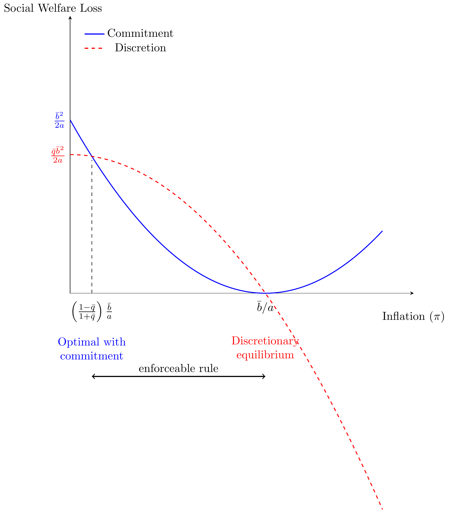

Prague University of Economics and Business
Faculty of Informatics and Statistics
The Winner’s Curse says basically that if the bidders don’t know really the true value of some objects, but their “guess” is in average correct, the winner always will tend to overpay for it.
This case is relevant for example in auctions for oil drilling projects, or the TV Shows where people bid for closed bags.
Imagine the following case, in an auction for a bag that is worth 25 each bidder has an estimate according to the following table:
| 1 | 2 | 3 | 4 | 5 | \(\bar{x}\) |
|---|---|---|---|---|---|
| 15 | 35 | 24 | 17 | 33 | 24,8 |
Who wins the auction?
Obviously if they are symmetric ex-ante of receiving the signal, bidder 2 will win the auction.
How much profits will this bidder make?
It might even make some profits, if the strategy is to shade a lot, but definitively will end up with a very much lower margin than expected.
What can they do?
Acquire information, share information and considering previous auctions try to estimate how wrong would their estimate be, in the case of being the winners.
There is a lot of research published in this field, in particular in the Operational Research literature.
Basically, what you want is to maximize your profits, controlling for the fact of having received the highest signal.
Imagine the following situation:
You bid for some project in your firm, and ex-post you realize that all your competitors’ bids were not even half of yours. A naïve manager would claim “Yeah!, we beat the competition! and for so much! muahahaha!”
A smart manager would say “Holy Guacamole!! bring me the head of the engineering team, and explain me why nobody else believed this project was worth so much.”
The expected utility for the bidder \(i\) is:
\[\begin{align*} E[u_i|\nu_i,b_i]=&u_i(\nu_i-b_i)\times Pr(b_i>b_{-i})\\&+u_i(0)\times[1-Pr(b_i>b_{-i})] \end{align*}\]
Where \(Pr(b_i>b_{-i})\) represents the probability of his bid being greater than all the others’ bids.
Note that the probability of beating all the other bidders is:
\[\begin{align*} Pr(b_i>b_{-i})=Pr(b_i>b_1)\times Pr(b_i>b_2)...Pr(b_i>b_n) \end{align*}\]
Let’s rewrite the expected utility of bidder \(i\):
\[\begin{align*} E[u|\nu_i]=u(\nu_i-b_i)\times Pr(b_i>b_1)\times Pr(b_i>b_2)...\times Pr(b_i>b_n) \end{align*}\]
If:
Then the probability of winning is equivalent to the probability of receiving the highest signal.
This information, though, can only be used finding the FOC, because symmetry is a consequence of optimization. If we impose symmetry ex-ante, we could end up with a very collusive equilibrium.
The FOC is:
\[\begin{align*} u'(\nu_i-b_i)\phi=u(\nu_i-b_i)\left[\sum_{t\neq i}\left(\frac{\partial Pr(b_i>b_t)}{\partial b_i}\prod_{j\neq\{i,t\}}Pr(b_i>b_j)\right)\right] \end{align*}\]
Calling \(\phi=\prod_{j\neq i} Pr(b_i>b_j)\).
This looks ugly, but it is not: multiply and divide by \(Pr(b_i>b_t)\) inside the rounded parenthesis. Note that when doing this, the product will be equal for any \(j\neq i\), and can be factored out.
\[\begin{align*} u'(\nu_i-b_i)\phi=u(\nu_i-b_i)\underbrace{\left[\prod_{j\neq i}Pr(b_i>b_j)\right]}_{\phi}\left[\sum_{t\neq i}\frac{\partial Pr(b_i>b_t)}{\partial b_i}\frac{1}{Pr(b_i>b_t)}\right] \end{align*}\]
Now, note that \(\prod_{j\neq i} Pr(b_i>b_j)\) is the probability of winning the auction, and we already differentiated, so we can use symmetry.
What is the probability of some bidder to have received the highest valuation? exactly, \(\frac{1}{n}\), as everyone has the same probability of having received the highest valuation.
\[\begin{align*} \frac{ u'(\nu_i-b_i)}{u(\nu_i-b_i)}=\sum_{t\neq i}\frac{\partial Pr(b_i>b_t)}{\partial b_i}\frac{1}{Pr(b_i>b_t)} \end{align*}\]
Recall that the probability of beating one other bidder, is the same that beating another bidder:
\[\begin{align*} \frac{ u'(\nu_i-b_i)}{u(\nu_i-b_i)}=(n-1)\frac{\partial Pr(b_i>b_{t\neq i})}{\partial b_i}\frac{1}{Pr(b_i>b_{t\neq i})} \end{align*}\]
If the bidding strategy is increasing in the valuation, the probability of beating another bidder is the probability of receiving a higher valuation than him! \[\begin{align*} Pr(b_i>b_{t\neq i})=G(\nu_i) \end{align*}\] We can conclude that the bid is a function of the valuation, and therefore \(b_i=b(\nu_i)\).
Now we want to deal with \(\frac{\partial Pr(b_i>b_{t\neq i})}{\partial b_i}\) so consider our last two equations:
\[\begin{align*} \frac{\partial G(\nu_i)}{\partial \nu_i}=g(\nu_i)=\frac{\partial Pr(b_i>b_{t\neq i})}{\partial b_i}\frac{\partial b(\nu_i)}{\partial \nu_i} \end{align*}\]
\[\begin{align*} \frac{\partial Pr(b_i>b_{t\neq i})}{\partial b_i}=\frac{g(\nu_i)}{\partial b(\nu_i)/\partial\nu_i} \end{align*}\]
If we replace then: \[\begin{align*} \frac{\partial Pr(b_i>b_{t\neq i})}{\partial b_i}&=\frac{g(\nu_i)}{\partial b(\nu_i)/\partial\nu_i}\\ Pr(b_i>b_{t\neq i})&=G(\nu_i) \end{align*}\] In our previous expression we obtain:
\[\begin{align*} \frac{1}{n-1}\frac{ u'(\nu_i-b_i)}{u(\nu_i-b_i)}=\frac{1}{\partial b(\nu_i)/\partial\nu_i}\frac{g(\nu_i)}{G(\nu_i)} \end{align*}\]
\[\begin{align*} \frac{1}{n-1}\frac{1}{\nu-b(\nu)}=\frac{1}{\partial b(\nu)/\partial\nu}\frac{1}{\nu} \end{align*}\]
So we end up with a differential equation. Let \(A=n-1\).
\[\begin{align*} \frac{\partial b(\nu)}{\partial \nu}+A\frac{b(\nu)}{\nu}&=A\\ e^{A\log(\nu)}\frac{\partial b(\nu)}{\partial \nu}+\frac{A e^{A\log(\nu)}}{ \nu} b(\nu)&=A e^{A\log(\nu)} \end{align*}\]
Using the integrating factor \(e^{A\log(\nu)}\).
\[\begin{align*} \frac{\partial}{\partial \nu}\left[e^{A\log(\nu)}b(\nu)\right]&=Ae^{A\log(\nu)}\\ e^{A\log(\nu)}b(\nu)&=\int A e^{A\log(\nu)}d\nu\\ e^{A\log(\nu)}b(\nu)&=A\int \nu^A d\nu\\ \nu^A b(\nu)&=A \frac{\nu^{A+1}}{A+1}\\ b(\nu)&=\frac{n-1}{n} \nu \end{align*}\]
The constant is zero, check at home.
There are two main profits of having inflation larger than the one is expected by the agents:
The Central Bank will have the following loss function
\[z_t = \frac{a}{2}\pi_t^2-b_t(\pi_t-\pi_t^e)\]
with \(a>0\) and \(b>0\). Assume \(b_t\) is a shock, distributed iid \((\bar{b},\sigma_b^2)\). This means that in some periods it can be more convenient to surprise the market than others. The key here, is that these periods cannot be anticipated.
The goal of the Central Bank is to minimize the lifetime loss:
\[ min Z_t = E\left[z_t+\frac{z_{t+1}}{1+r}+\frac{z_{t+2}}{(1+r)^2}+\dots\right]\]
Let \(q_t=\frac{1}{1+r_t}\), and \(q_t\overset{iid}{\rightarrow}(\bar{q},\sigma_q^2)\). \(b_t\) and \(q_t\) are shocks, and therefore cannot be anticipated.
If we take the FOC with respect to \(\pi_t\), what the central banker can actually influence, we end up with:
\[\begin{align*} \frac{\partial z_t}{\partial \pi_t}=a\pi_t-\bar{b}=0\quad \Rightarrow\quad \pi_t^D=\frac{\bar{b}}{a} \end{align*}\]
This is the discretionary inflation that the central banker will choose.
What is the problem?
Agents are rational! They will anticipate this, and will set \[\pi_t^e=\frac{\bar{b}}{a}\]
Which leads to the loss: \[z_t^D=\frac{1}{2}\frac{\bar{b}^2}{a}\]
Assume now, the Central Bank commits to an inflation level ex-ante, and people gives them the benefit of the doubt.
If the Central Bank tries to preserve its reputation: \[z_t= E\left[\frac{a}{2}\pi_t^2 - b_t\underbrace{(\pi_t-\pi_t)}_{0}\right]= \frac{a}{2}\pi_t^2\]
Which is obviously minimized at \(\pi_t^C=0\).
This is, with this commitment rule, the ideal inflation is 0.
Substituting this back in the loss function leads to \[z_t^R=0\]
Are we over?
Now \(\pi_t^e=0\), so the loss function for the Central Bank is:
\[z_t=\left[\frac{a}{2}\pi_t^2-b_t(\pi_t-0)\right]\]
This has a minimum at \(\pi_t^B = \frac{\bar{b}}{a}\), i.e., it coincides with \(\pi_t^D\), but now the loss of the Central Bank is: \[z_t^B=\frac{a}{2}\left(\frac{\bar{b}}{2}\right)^2-\bar{b}\frac{\bar{b}}{a}=\frac{-\bar{b}^2}{2a}\]
And negative loss is a gain! The Central Bank, by making people believe that \(\pi_t\) would be zero, had an even larger temptation to betray them!
What was the gain?
\[B=E[Z_t^R-z_t^E]=\frac{\bar{b}^2}{a}>0\]
The Central Bank has these 3 alternatives:
| Payoff | |
|---|---|
| Betray | \(\frac{-\bar{b}^2}{2a}\) |
| (follow the) Rule | \(0\) |
| (no rule) Discretion | \(\frac{\bar{b}^2}{2a}\) |
The key is that agents are rational, and if the Central Betray’s the rule, they will not believe it anymore and follow a discretionary equilibrium in the next period. Let’s assume the punishment lasts a single period.
We already know that the temptation to betray is \(B=\frac{\bar{b}^2}{2a}>0\). The problem, is that if this is the case, the next period the agents believe in the discretionary arrangement, and the authority losses \(z_{t+1}^D=\frac{\bar{b}^2}{2a}\).
We can bring the future cost of betraying the agents today by multiplying by \(q\), and then we find the expected value of betraying today for the Central Banker:
\[C = E\left[q_t(z_{t+1}^D-z_{t+1}^R)\right]=\bar{q}\frac{\bar{b}^2}{2a}>0\]
And the CB will follow the rule if \(C\geq B\), i.e. the gains of following the rule are larger than the ones it gets by betraying the agents.
Problem?
\[C=\frac{\bar{b}^2}{2a} < \bar{q}\frac{\bar{b}^2}{2a}\]
Because \(\bar{q}<1\)! Betraying the rule is always rationa, and therefore agents (who are rational) will never believe the rule. \(\pi^R=0\) is too low, temptation is always too large.
Need to find \(\pi^R\) such that minimizes \(Z_t\), but at the same time is high enough to make the betraying costs too large, and make the CB stick with it.
Clearly \(\pi^R>0\), as \(0\) does not work. Just let \(\pi^R=\pi\) for now.
The loss for the Central Bank is:
Note that following the discretionary policy (D) or betraying yields the same payoff (it is the same thing today!)
\[E[z_t^R-z_t^B]=\frac{a}{2}\left(\frac{\bar{b}}{a}-\pi\right)^2\]
\[\bar{q}E[z_t^D-z_t^R]=\bar{q}\frac{a}{2}\left(\left(\frac{\bar{b}}{a}\right)^2-\pi^2\right)\]
Note that:

So any \(\pi^*\in\left[\left(\frac{1-\bar{q}}{1+\bar{q}}\right)\frac{\bar{b}}{a},\frac{\bar{b}}{a}\right]\) is a good candidate for an equilibrium inflation goal.
But, what is the best? What will the Central Banker choose?
The optimal goal for inflation will be the one that minimizes the present value of the loss function.
In general, the only benefits of inflation come from surprise inflaction, everything else is pure cost. If the Bank will stick to its goal, then there are no gains of having higher inflation levels!
\[\pi^*=\left(\frac{1-\bar{q}}{1+\bar{q}}\right)\frac{\bar{b}}{a}\]
Note that the optimal inflation depends on variables that are stochastic! Then, the Central Banks will allow for an interval around this ideal inflation goal.
This mode gives us an inflation rate that is a Nash Equilibrium, where nobody has incentives to deviate: Central Banks sticks to the inflation it promised, and Agents stick to believe this goal.
This, follows a simplified version of Allan Drazen’s presentation of the model in chapter 4.2 of his book Political Economy in Macroeconomics (2000).
A 2-period model:
The lifetime utility for the representative agent is:
\[\Omega = \ln c_1 + \beta \left[\ln c_2 + \gamma \ln g_2\right]\]
With \(\beta\) and \(\gamma\) some known parameters.
\[\mathcal{L}=\ln c_1 + \beta \left[\ln c_2 + \gamma \ln g_2\right]+\lambda\left(y+R(y-c_1)-c_2-g_2\right)\]
With first order conditions:
\[\begin{align*} \frac{1}{c_1}&=\lambda R\\ \frac{\beta}{c_2}&=\lambda\\ \frac{\beta\gamma}{g_2}&=\lambda\\ c_2+g_2&=y+R(y-c_1) \end{align*}\]
\[\begin{align*} c_1&=\frac{y(1+R)}{R(1+\beta(1+\gamma))}\\ c_2&=\beta R c_1\\ g_2&=\gamma\beta R c_1\\ k_2&= \frac{R\beta(1+\gamma)-1}{R(1+\beta(1+\gamma))}y \end{align*}\]
This is what Fisher’s call the command optimum, or what would be the First-Best.
In real life, governments need to collect taxes in order to fund \(g_2\), and cannot directly affect \(c_1,c_2\).
Suppose the government can collect taxes on the return of capital, \(\tau\). Now the budget constraints for the agent are:
\[\begin{align*} c_1+k_2&=y\\ c_2&=(1-\tau)R k_2+y \end{align*}\]
Let’s rewrite the lifetime utility as a function of \(k_2\) and \(l_2\):
\[\ln (c_1) + \beta \ln (c_2) + \beta \gamma \ln (g_2)\]
with FOCs:
\[\begin{align*} \left.\begin{array}{c} \frac{1}{c_1}=\lambda(1-\tau)R\\ \frac{\beta}{c_2}=\lambda \end{array}\right\} \Rightarrow c_2=c_1\beta(1-\tau)R \end{align*}\]
Substituting into the budget constraint:
\[\begin{align} c_1\beta(1-\tau)R &= y + (1-\tau)R(y-c_1)\\ c_1(1-\tau)R (1+\beta)&= \left(1 + (1-\tau) R\right)y\\ c_1 &= \frac{1 + (1-\tau) R}{(1-\tau)R (1+\beta)}y \end{align}\]
\[\begin{align*} k_2 &= y-c_1\\ &= y-\frac{1 + (1-\tau) R}{(1-\tau)R (1+\beta)}y\\ &= \frac{(1-\tau)R (1+\beta) - 1 - (1-\tau) R}{(1-\tau)R (1+\beta)}y\\ &= \frac{(1-\tau)R \beta - 1 }{(1-\tau)R (1+\beta)}y\\ k_2& = \frac{\beta}{1+\beta}y - \frac{1}{(1-\tau)R(1+\beta)}y \end{align*}\]
It is clear that for an announced \(\tau\), \(k_2\) is decreasing in \(\tau\). On the other hand, the government has an incentive to have a large \(k_2\), so it can raise more taxes and fund a larger \(g_2\).
Suppose the government announces a very low \(\tau\) with the hope of incentivizing a larger \(k_2\). Will the consumers believe it?
No! this is not SPNE! Once the consumers invested, the government has incentives to increase taxes.
What is the optimal rule?
Suppose the government chooses the maximize utility in \(t=2\) only (it has no power in \(t=1\)):
\[\max_{t_k}\ \ln(\overbrace{y+R(1-\tau)k_2}^{c_2})+\gamma \ln(\overbrace{\tau R k_2}^{g_2})\]
With \(FOC\):
\[\begin{align*} \frac{\gamma R k_2}{\tau R k_2} = \frac{Rk_2}{y+R(1-\tau)k_2} \end{align*}\]
\[\begin{align*} \frac{\gamma}{\tau}&=\frac{Rk_2}{y+R(1-\tau)k_2}\\ \tau&= \frac{\gamma(y+R(1-\tau)k_2)}{R k_2}\\ \tau&= \frac{\gamma y}{R k_2}+\gamma(1-\tau)\\ \tau &=\frac{(y+R k_2)}{R k_2}\frac{\gamma}{1+\gamma} \end{align*}\]
What if \(\tau\neq\tau^e\)? In this case \(k_2\) is just a constant, and therefore it is not present in the optimization problem:
\[\begin{align*} \max_{t_k}\ &\ln(y+R(1-\tau)k_2)+\gamma \ln(\tau R k_2)\\ \max_{t_k}\ &\ln(y+R(1-\tau)k_2)+\gamma \ln (\tau)+\underbrace{\gamma\ln(R k_2)}_{\text{constant in}\ \tau} \end{align*}\]
With FOC:
\[\begin{align*} \frac{\gamma}{\tau}&=\frac{Rk_2}{y+R(1-\tau)k_2}\\ \tau Rk_2 &= \gamma y + \gamma R (1-\tau)k_2\\ (1+\gamma)\tau R k_2 &= \gamma (y+Rk_2)\\ \tau &= (y+Rk_2)\frac{\gamma}{1+\gamma} \end{align*}\]
These slides follow what is found in:
Economics of Incentives